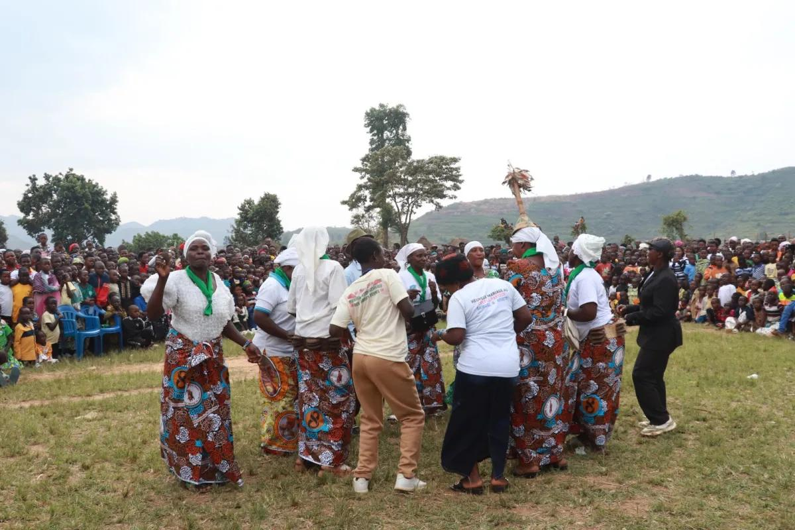
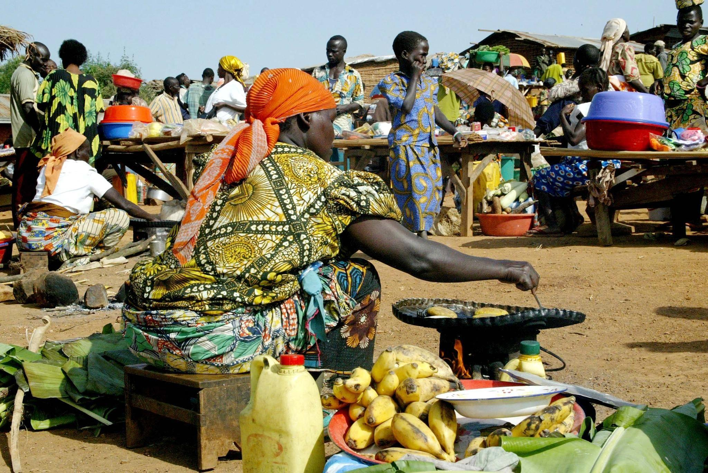
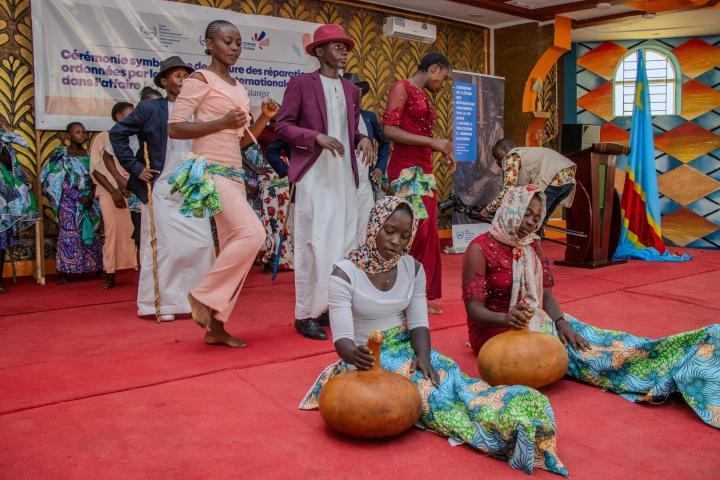
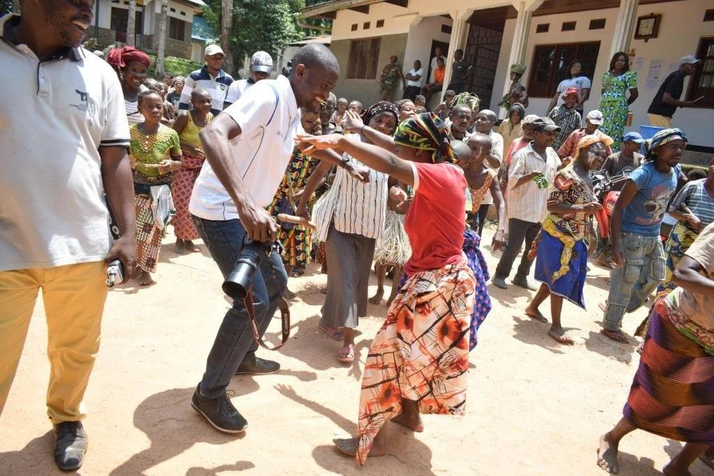

Cultural Diversity
Ituri Province is home to different communities with unique cultural identities, languages, traditions and ways of life. Communities such as the Alur, Hema, Lendu, Ngiti and Bira contribute to the province's rich cultural diversity.

Traditional Music and Dance
Music and dance are important parts of cultural expression in Ituri. Traditional songs, rhythms and dances are used during celebrations, community gatherings and cultural events. They help communities share their history and pass traditions from one generation to another.
Languages and Communication
Different languages are spoken across Ituri by its diverse communities. French is the official language of the Democratic Republic of the Congo, while Swahili and various local languages are also used in everyday communication in the region.
Traditional Food and Customs
Food is an important part of community life in Ituri. Local diets include agricultural products such as cassava, maize, beans, vegetables and other locally available foods. Cooking practices and customs vary among communities.

Traditional Practices and Celebrations
Cultural practices are expressed through ceremonies, storytelling, family traditions, community celebrations and other social activities. These practices help preserve identity, strengthen relationships and maintain connections between generations.

Arts and Cultural Heritage
Traditional crafts, artistic expression, clothing, storytelling and other cultural practices contribute to the heritage of Ituri. Preserving these traditions helps communities maintain their identities and share their history with younger generations.

Preserving Cultural Diversity
Cultural preservation requires respect, education and cooperation among communities. Schools, cultural groups and community organisations can help document traditions, promote local languages and encourage cultural exchange.
Explore the Gallery